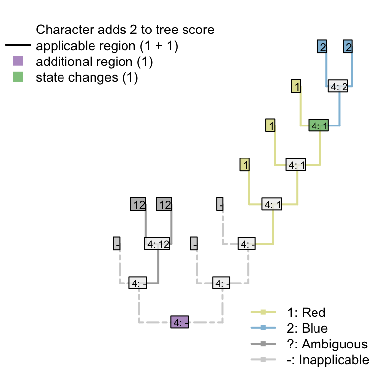

5 Coding ambiguity
Ambiguous data does not pose a problem for the algorithm, but the nature of the ambiguity must be considered when scoring a character.
5.1 Principal character ambiguous
If it’s not clear whether or not a taxon has a tail, then tail colour should be
coded as ?, denoting that any possible token (including the inapplicable token)
may be the most parsimonious for the tail.
In trees in which the tail can be reconstructed as present, the ambiguous tip will be reconstructed as having a tail of the appropriate colour:

In trees in which the tail cannot be reconstructed as present without inferring a homoplasious origin, the tail colour will be reconstructed as inapplicable:

5.2 Principal character known
If a taxon is known to have a tail, there are two scenarios for ontologically dependent transformational characters:
5.2.1 Subordinate character has finite states
If the subordinate character must take one of a finite set of values, then the unobserved property of the tail is known to belong to these values and should be coded accordingly.
For example:
Tail: (0), absent; (1), present
Tail margin: (0), smooth; (1), serrated.
Assume that the tail margin must either be smooth or serrated, and there is no
reason to assume that either state is ancestral (i.e. the character is strictly
transformational). Tail margin should then be coded as {01}: i.e. the tail
is known to have taken one of the two states 0 or 1.
5.2.2 Subordinate character may have unobserved states
A more complicated situation arises where a subordinate character may have unobserved states, as with
Tail colour: (0), red; (1), blue.
A taxon that is known to have a tail, but whose tail colour is uncertain, should
generally be coded as ?.
Coding it as {01} would be appropriate if the tail was
known to certainly be homologous with other tails in the dataset, in which case
it would be most parsimonious to assume that the tail colour is the same colour
as the ancestor of the tip, which was necessarily either red or blue.

But if, as will more often be the case, homology of the tails is not known a priori, then it is possible that this taxon has a tail that is not homologous with any other tail whose colour has been observed.
In this case, coding the tail colour as {01} denotes that the tail is the same
colour as a tail that has already been observed. This means that the independent
origin of the tail also represents an independent
origin of this particular colour – and hence an instance of homoplasy.

Coding the tail colour as ? allows the possibility that the independently-evolved
tail has a different colour to the tails already observed – green, perhaps.
Reconstructing the tail colour as a colour that has not already been observed
avoids an instance of homoplasy, and is therefore more parsimonious.
In the case that the unknown tail evolved independently and was green, the original character formulation – which only provides tokens for red and blue tails – cannot be applied and is thus inapplicable. Our algorithm will thus reconstruct tail colour as being inapplicable in such a taxon.

5.3 Recommendation
We therefore recommend the following coding schema for ambiguous tips where the tail is known to be present, ambiguous, or known to be absent:
| Present | Unknown | Absent | |
|---|---|---|---|
| Tail: (0), absent; (1), present. | 1 | ? | 0 |
| Tail margin: (0), smooth; (1), serrated. | {01} | ? | - |
| Tail colour: (0), red; (1), blue. | ? | ? | - |
“Tail margin” represents a character that can only take the states observed (smooth or serrated), whereas tail colour represents a character that may take an unobserved state (e.g. green).